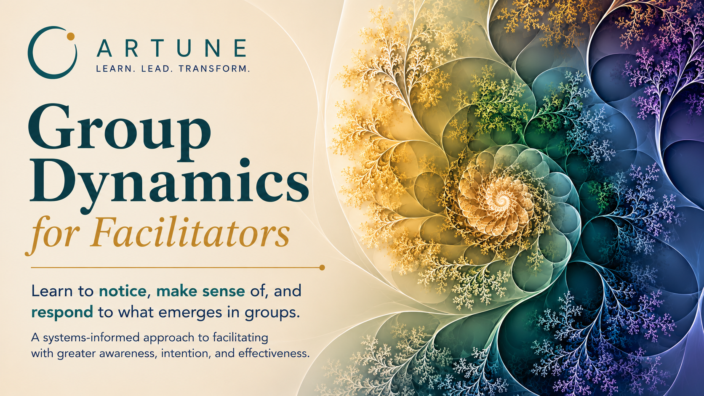

Courses
Structured learning experiences connected to the FreshLearn platform.
 Artune
Member Portal
Artune
Member Portal
Learning
Artune learning experiences are designed to help people develop awareness in action through courses, reflections, resources, and practices that bring multiple lenses into conversation.

Current Offering
Learn to notice, make sense of, and respond to what emerges in groups.
Learn MoreStructured learning experiences connected to the FreshLearn platform.
Reflections and inquiry pieces that bring lenses into conversation.
Tools, practices, and learning materials for continued development.
Attention, reflection, and mindfulness-based practices for awareness.
Work With Ara
Bring a real design, question, or situation into focused consultation and strengthen your capacity to work with what emerges in groups.
$595 per consultation
Bring your next workshop, retreat, leadership meeting, classroom experience, or facilitation design for an in-depth consultation.
Together, we'll examine not only the agenda and activities, but also the group dynamics that are likely to emerge. Using a systems-informed lens, we'll strengthen the design by considering task, authority, role, boundaries, participation, identity and difference, and the conditions that support meaningful learning and engagement.
This consultation is ideal for facilitators, consultants, educators, organizational leaders, and anyone designing experiences where people come together to think, learn, collaborate, or make decisions.
Connect$295 per hour
Sometimes the most valuable learning comes from examining a real situation you're currently navigating.
These one-on-one sessions provide personalized support for facilitators, leaders, consultants, educators, and organizational practitioners seeking guidance on complex group situations.
Sessions may focus on:
Whether you're preparing for an important facilitation or reflecting on one that's already happened, these conversations are designed to strengthen your confidence, deepen your awareness, and expand your capacity to work effectively with groups.
Connect